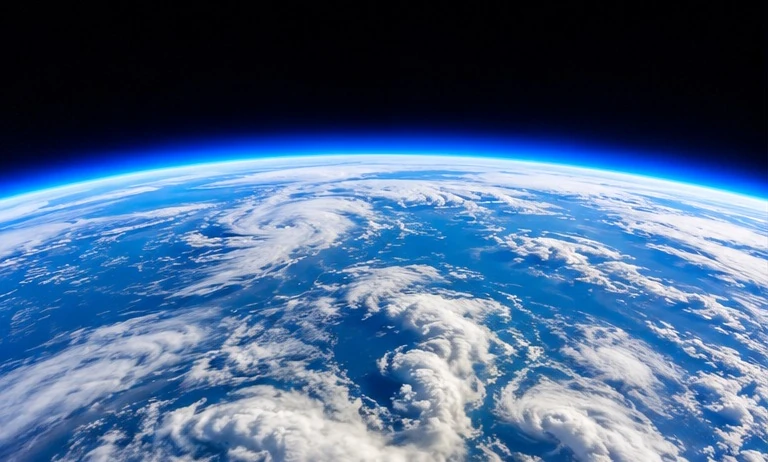
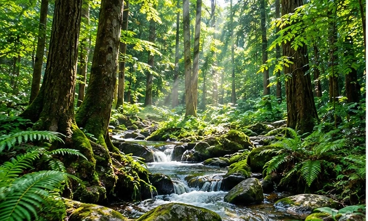
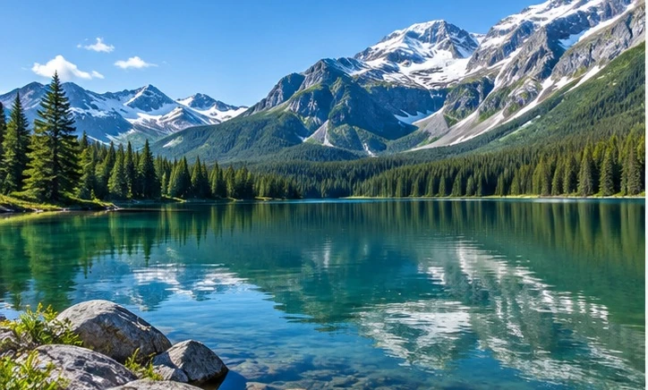
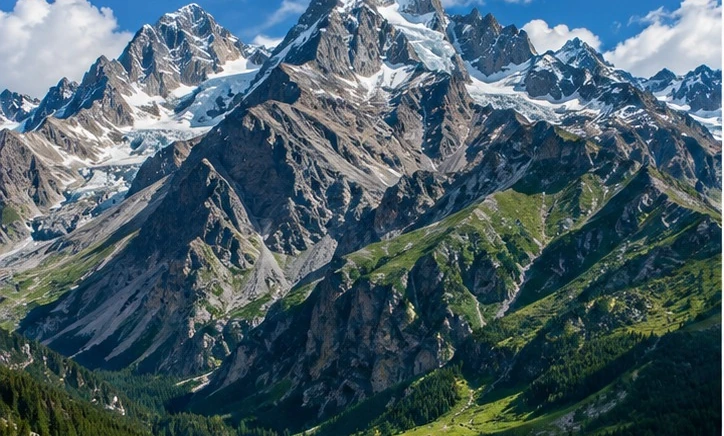

GRADE 4 / EARTH SCIENCE
One Earth.
Everything connects.
Explore the living things, water, land, and air that make our planet home.
1 Choose a sphere 2 Read & listen 3 Make connections

AIR / WATER / LAND / LIFE
Where will you explore?
Four readers. One connected world.

01 / LIVING THINGS
Biosphere
Plants, animals, people—and every living thing.
Open reader
02 / WATER
Hydrosphere
Rivers, oceans, ice, and water on the move.
Open reader
03 / LAND AND ROCK
Geosphere
From the soil under your feet to rocks deep inside Earth.
Open reader04 / AIR
Atmosphere
The invisible blanket of gases around our planet.
Open readerFOLLOW A CONNECTION
Nothing on Earth works alone.
A tree grows in soil, takes in water, and uses gases from the air. One tree connects all four spheres.
Air+Water+Soil→A living tree